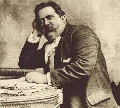
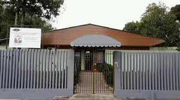

Emilio De Menezes
Emílio de Menezes, jornalistas e poeta, nasceu em Curitiba, PR, em 4 de julho de 1866, e faleceu no Rio de Janeiro, em 6 de Junho de 1918.
Eleito em 15 de Agosto de 1914 para cadeira n. 20, na sucessão de Salvador de Mendonça, não chegou a ser recebido.
Deveria ter sido recebido por Mural

O Colégio Estadual Emílio de Menezes, oferece aulas do ensino fundamental 2, médio, técnico e profissionalizante.
Foi fundado em Outubro de 1975 por Emílio de Menezes, um jornalis e poeta, paranaense.
É localizado na Rua José Zaleski, n° 450, no bairro Capão Raso, em Curitiba, no Paraná